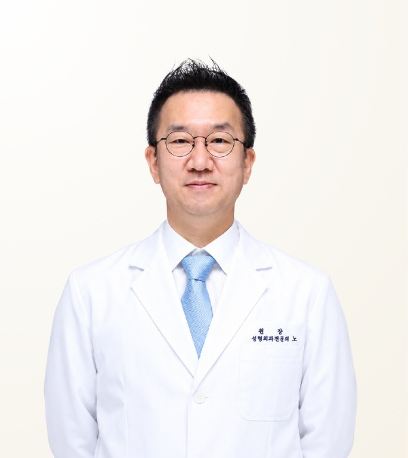

Reviewed by STMSTYLE
Noh Jong-Hoon
โน จงฮุน · 노종훈
Noh Jong Hoon Plastic Surgery · Board-certified Plastic Surgeon
- Zygoma Reduction
- Revision Facial Contouring
- Autogenous Facial Bone Grafting
- Experience
- 32 years in practice (since 1994)
- Clinical experience
- 10,000 cases
- Recommended Stay
- 8 days
About the Doctor
Dr. Noh Jong-Hoon is a board-certified plastic surgeon and director of Noh Jong Hoon Plastic Surgery in Gangnam, Seoul, known for zygoma reduction, revision facial contouring and autogenous facial bone grafting. He has focused on facial bone surgery since 1994, with 32 years in practice and 10,000 clinical cases, and trained in plastic surgery at Seoul National University Hospital. Rather than removing as much bone as possible, he plans around left-right symmetry and the balance of the whole face, reusing the patient's own bone instead of artificial implants.
Case Expertise
Zygoma Reduction
Reduces projection at the front and side of the cheekbone to adjust facial width and dimension. The space remaining after reduction and the final position of the soft tissue are considered together, with fixation by titanium pins.
Revision Facial Contouring
Corrects left-right asymmetry, nonunion and excessive or insufficient osteotomy remaining after previous contouring surgery. Existing fixation material and bone condition are checked before the extent of revision is decided.
Autogenous Facial Bone Grafting
Bone removed during contouring is not discarded but grafted into areas lacking volume, such as under the eyes, the nasolabial fold or beside the alar base, using the patient's own tissue instead of an artificial implant.
Other treatments available
Materials & Equipment
Video
Q&A video with the doctorAsk our team on WhatsApp or LINE for more informationPhilosophy of Care
Having focused on facial bone surgery for many years while continuing to research and publish, he considers it essential to build the structure and balance of the whole face using the patient's own bone rather than artificial implants. Bone taken during contouring surgery is not discarded but used to improve volume and shape in areas that are difficult to reach, such as under the eyes or beside the nasolabial fold and alar base. Where necessary, limited eye or nose surgery is carried out within the overall facial plan alongside contouring; high-difficulty eye or nose surgery, or standalone eye and nose surgery unrelated to contouring, is not part of his main scope. He treats patients with a gentle, warm manner.
— Noh Jong-Hoon
STMSTYLE Assessment
STMSTYLE considers Dr. Noh Jong-Hoon's strength to be more than thirty years focused on facial contouring surgery and a deep understanding of facial bone structure. Rather than simply reducing as much bone as possible, he looks closely at left-right asymmetry and the balance of the whole face, and is particularly strong in high-difficulty cases where structural judgement matters, such as zygoma revision and autogenous facial bone grafting. Based on long-term collaboration, STMSTYLE recommends him for patients who need natural balance and reconstruction considered together, and regards him as a craftsman-type surgeon who has devoted his career to one field.
STMSTYLECareer & Training
View full background
Licences & certification
- Board-certified Plastic Surgeon
Career
- Director, Noh Jong Hoon Plastic Surgery
- Resident, Department of Plastic Surgery, Seoul National University Hospital
- Clinical Fellow, Department of Plastic Surgery, Seoul National University Hospital
- Clinical Advisor, Department of Plastic Surgery, Seoul National University Hospital
- Adjunct Professor, Department of Plastic Surgery, Seoul National University Bundang Hospital
- Former Co-Director, Seoul Jeil Plastic Surgery
- Former Co-Director, Park Sang-Hoon Plastic Surgery
- Multiple journal papers and conference presentations, Korean Society of Plastic and Reconstructive Surgeons 2001–2005
- Paper presented, Asian Pacific Craniofacial Association (Tokyo) 2002
- Paper presented, Korea–Japan Plastic Surgery Congress (Seoul) 2002
- Co-translator, Korean edition of Dallas Rhinoplasty
Professional memberships
- Full member, Korean Society of Plastic and Reconstructive Surgeons
- Full member, Korean Society for Aesthetic Plastic Surgery
- Full member, Asian Pacific Craniofacial Association
- Full member, International Society of Aesthetic Plastic Surgery (ISAPS)
Frequently Asked Questions
Is Dr. Noh Jong-Hoon experienced in revision facial contouring?
Yes. Dr. Noh Jong-Hoon performs revision contouring and high-complexity cases, correcting asymmetry, nonunion and excessive or insufficient osteotomy from previous surgery. He checks existing fixation material and bone condition before deciding the extent of revision. The final plan is set after an in-person consultation.
What materials does Dr. Noh Jong-Hoon use in facial contouring?
Dr. Noh Jong-Hoon works primarily with the patient's own bone, with titanium pins for fixation. Bone removed during contouring is grafted into areas lacking volume, such as under the eyes, the nasolabial fold or beside the alar base, instead of using artificial implants.
Does Dr. Noh Jong-Hoon perform eye or nose surgery?
Dr. Noh Jong-Hoon performs eye and nose surgery only within the scope required alongside facial contouring, as part of an overall facial plan. High-difficulty or standalone eye and nose surgery is not part of his main scope. For eye-only or nose-only needs, STMSTYLE can suggest a suitable surgeon.
How long should I stay in Korea for contouring surgery with Dr. Noh Jong-Hoon?
The recommended stay for surgery with Dr. Noh Jong-Hoon is 8 days. The actual length can vary with the scope and number of procedures, and is advised individually after consultation.
Can I consult Dr. Noh Jong-Hoon through STMSTYLE in Thailand?
Yes. STMSTYLE has worked directly with Dr. Noh Jong-Hoon over the long term and coordinates patients from the first consultation in Bangkok or via WhatsApp through to scheduling at the clinic. Surgery is performed by the doctor himself, and the final plan and cost are confirmed after an in-person consultation.
Sources
View sources and review record
| Item | Source | Checked |
|---|---|---|
| Licence and plastic surgery board certification | Noh Jong Hoon Plastic Surgery official website | 2026-08-28 |
| Training and career history | Clinic official website and academic society records | 2026-08-28 |
| Publications and conference presentations | Published papers and conference records | 2026-08-28 |
| Main procedures, philosophy of care and patient approach | STMSTYLE direct review through in-person meetings, consultations and long-term patient coordination | 2026-08-28 |
Review record · 2026-08-28
STMSTYLE reviewed Dr. Noh Jong-Hoon's profile through long-term collaboration, in-person meetings, on-site visits and actual patient coordination, cross-checked against the clinic's official website, academic society records and publications.